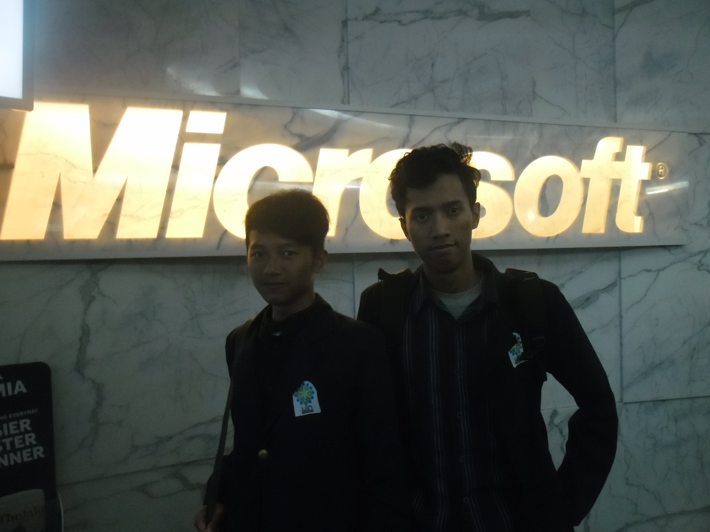

Tentang
Oleh Banni Pebriansyah

Banni Offline Web dibuat oleh Banni Pebriansyah © 2017
Terimakasih kepada para master dan partner yang telah membantu saya selama pembelajaran HTML serta teman yang memberi dukungan dan semangat.
Terakhir diperbarui 1 April 2018.
Apa yang Baru ?
- Warna tema flat yang menarik serta logo baru
- Terdapat 6 warna tema yang bisa diganti sesuai keinginan tanpa mereload halaman
- Navigasi sticky serta fixed taskbar dengan scrolltop dan pemutar musik
- Header yang lebih simple
Website
- Facebook : Banni Pebriansyah
- Twitter : @banipebriansyah
- Line : d.cobain56
- WhatsApp : 081296977703
Terimakasih Kepada
- ariona.net, untuk tutorial HTML dan CSS
- ngajarcss.blogspot.com, untuk CSS dropdown menu
- Billy Foo, untuk pemilih warna tema
- JQuery
- vtimbuc.net, untuk script pemutar musik
- Dan kepada master/kawan" lainnya, yang memberikan support dan semangat.
Penutup
Tentunya laman ini jauh dari kata sempurna, saya mohon maaf jika dalam laman ini terdapat kata - kata yang menyinggung perasaan. Terimakasih atas partisipasinya, semoga di dalam laman ini masih terdapat manfaat untuk Anda.